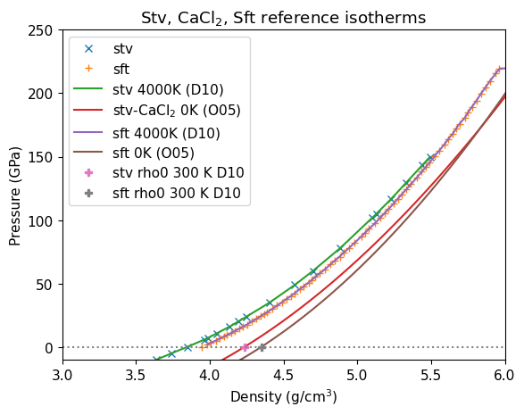
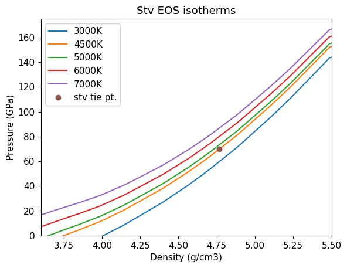
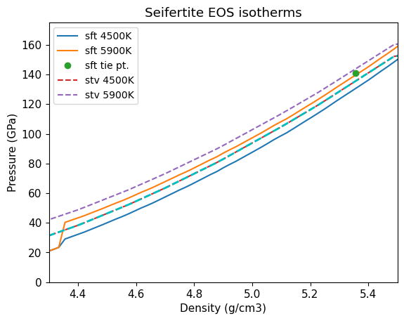
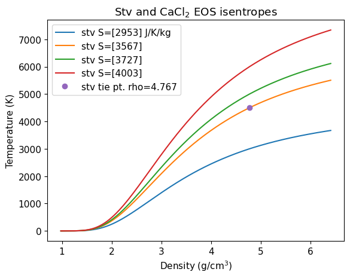
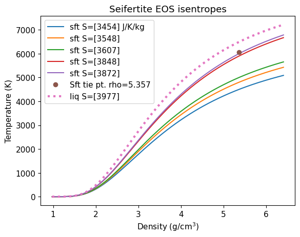
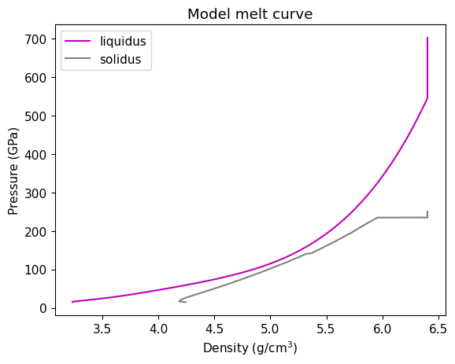
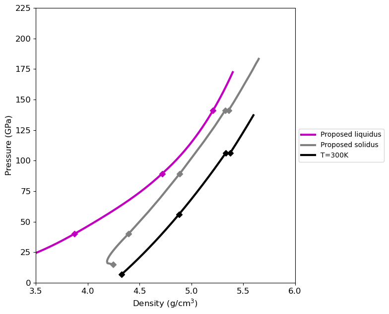
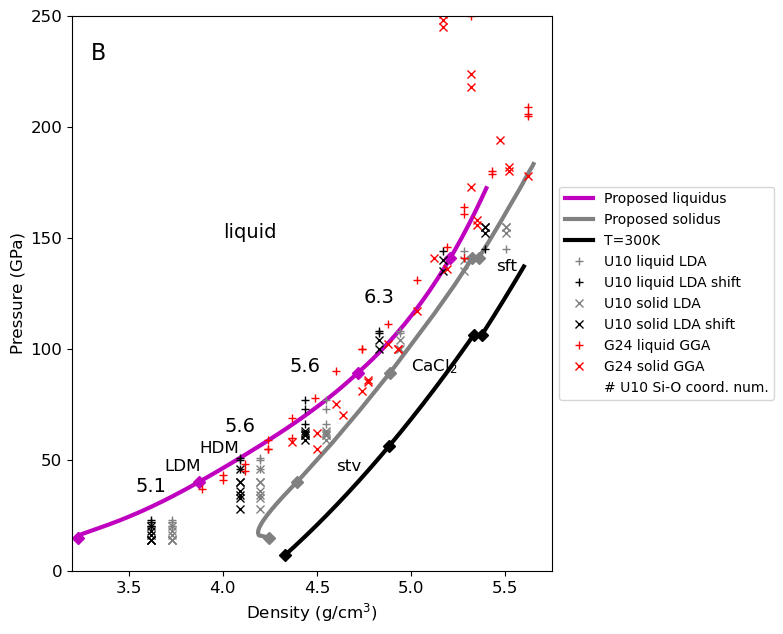
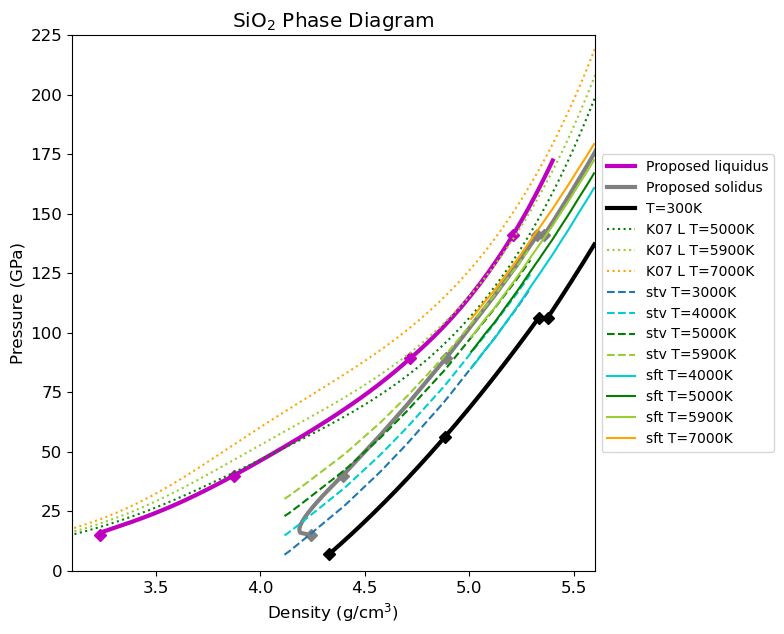

Solid Equations of State#
NOTE: triple check the code that the reference curve for PVT MG model is 4000 K isotherm and reference point for entropy is 4500 K isotherm for stv and triple point isotherm for sft.
We use Mie-Grüneisen equations of state with 4000 K reference isotherms (P-V) and Grüneisen parameter values from Driver et al. [2010] for stishovite (and CaCl\(_2\)-type) and seifertite. We assume the form:
\(\gamma=\gamma_0 \left(\frac{V}{V_0}\right)^q\)
Then, we apply a constant heat capacity at the reference point to obtain isentropes in a manner similar to applied to the liquid model (see Liquid Equation of State). Driver et al. [2010] calculated isotherms using QMC. We use the QMC-derived solid EOS in conjunction with the density-shifted liquid DFT EOS to define properties along the silica melt curve.
The Driver et al. [2010] 300 K reference density for stishovite is 4.235 g/cm\(^3\), \(\gamma_0=1.22\), \(q=2.22\). The 300 K reference density for seifertite is 4.349 g/cm\(^3\), \(\gamma_0=1.27\), and \(q=2.05\).
---------------------------------------------------------------------------
FileNotFoundError Traceback (most recent call last)
File ~/work/silica-supplement/silica-supplement/silica-book/scripts/load_silica_data.py:45
43 fsdf = hp.rusbanktodf([rbfs])[0]
44 if True:
---> 45 with open(rusbank_path+'rusbankref_list.pkl', 'rb') as f:
46 # Call load method to deserialze
47 ref_list = pickle.load(f)
49 for item in ref_list:
File /opt/hostedtoolcache/Python/3.13.12/x64/lib/python3.13/site-packages/IPython/core/interactiveshell.py:346, in _modified_open(file, *args, **kwargs)
339 if file in {0, 1, 2}:
340 raise ValueError(
341 f"IPython won't let you open fd={file} by default "
342 "as it is likely to crash IPython. If you know what you are doing, "
343 "you can use builtins' open."
344 )
--> 346 return io_open(file, *args, **kwargs)
FileNotFoundError: [Errno 2] No such file or directory: '/Users/sts/Library/CloudStorage/Dropbox-Personal/eos/github/silica-supplement/py-rusbank/rusbankref_list.pkl'
---------------------------------------------------------------------------
FileNotFoundError Traceback (most recent call last)
File ~/work/silica-supplement/silica-supplement/silica-book/scripts/define_mc.py:16
13 dat.formula = ['SiO2']
14 dat.rho_ref = [2.650] # g/cm3
---> 16 dat.P = np.loadtxt(dat_file,delimiter=',',skiprows=1,usecols=[0])
17 dat.P_units = ['GPa']
18 dat.T_s = np.loadtxt(dat_file,delimiter=',',skiprows=1,usecols=[1])
File /opt/hostedtoolcache/Python/3.13.12/x64/lib/python3.13/site-packages/numpy/lib/_npyio_impl.py:1395, in loadtxt(fname, dtype, comments, delimiter, converters, skiprows, usecols, unpack, ndmin, encoding, max_rows, quotechar, like)
1392 if isinstance(delimiter, bytes):
1393 delimiter = delimiter.decode('latin1')
-> 1395 arr = _read(fname, dtype=dtype, comment=comment, delimiter=delimiter,
1396 converters=converters, skiplines=skiprows, usecols=usecols,
1397 unpack=unpack, ndmin=ndmin, encoding=encoding,
1398 max_rows=max_rows, quote=quotechar)
1400 return arr
File /opt/hostedtoolcache/Python/3.13.12/x64/lib/python3.13/site-packages/numpy/lib/_npyio_impl.py:1022, in _read(fname, delimiter, comment, quote, imaginary_unit, usecols, skiplines, max_rows, converters, ndmin, unpack, dtype, encoding)
1020 fname = os.fspath(fname)
1021 if isinstance(fname, str):
-> 1022 fh = np.lib._datasource.open(fname, 'rt', encoding=encoding)
1023 if encoding is None:
1024 encoding = getattr(fh, 'encoding', 'latin1')
File /opt/hostedtoolcache/Python/3.13.12/x64/lib/python3.13/site-packages/numpy/lib/_datasource.py:192, in open(path, mode, destpath, encoding, newline)
155 """
156 Open `path` with `mode` and return the file object.
157
(...) 188
189 """
191 ds = DataSource(destpath)
--> 192 return ds.open(path, mode, encoding=encoding, newline=newline)
File /opt/hostedtoolcache/Python/3.13.12/x64/lib/python3.13/site-packages/numpy/lib/_datasource.py:529, in DataSource.open(self, path, mode, encoding, newline)
526 return _file_openers[ext](found, mode=mode,
527 encoding=encoding, newline=newline)
528 else:
--> 529 raise FileNotFoundError(f"{path} not found.")
FileNotFoundError: /Users/sts/Library/CloudStorage/Dropbox-Personal/eos/github/silica-supplement/silica-book/scripts/melt-curve-wedge.txt not found.
---------------------------------------------------------------------------
FileNotFoundError Traceback (most recent call last)
File ~/work/silica-supplement/silica-supplement/silica-book/scripts/define_eos.py:208
206 fs_fit_liq0.outputfitpath = modelfitpath # in load_paths.py
207 fs_fit_liq0.filename = 'fs_fit_liq_quadratic'
--> 208 fs_fit_liq0.loadjson()
210 # create reference Hugoniot from fit
211 fs_hug_liq = hp.HPeos_Shock()
File ~/work/silica-supplement/silica-supplement/silica-book/scripts/hpeos_module.py:351, in HPeos_Fit.loadjson(self)
348 def loadjson(self):
349 # read in json formatted fit record file and then reconstruct a dictionary
350 # need to add a function to load the readable version
--> 351 with open(self.outputfitpath+self.filename+'.txt', 'r') as f:
352 filetext = f.readlines()[0] # read in whole file into text
353 datadict = json.loads(filetext) # convert long string into dictionary
FileNotFoundError: [Errno 2] No such file or directory: '/Users/sts/Library/CloudStorage/Dropbox-Personal/eos/github/silica-supplement/silica-book/model-fits/fs_fit_liq_quadratic.txt'
---------------------------------------------------------------------------
NameError Traceback (most recent call last)
File ~/work/silica-supplement/silica-supplement/silica-book/scripts/calibrate_decaying_shocks.py:20
15 qtz_hug_KD.rho = 1/((1/qtz_hug_KD.rho_ref)*(1-(qtz_hug_KD.up/qtz_hug_KD.us))) # kg/m3
18 # Calibrate Millot & Davies unpublished decaying shocks in alpha-quartz, z cut
19 # high pressure uses the liquid branch of the new Hugoniot fit
---> 20 shockdat_list[MDqtz70811['id']].P = np.interp(shockdat_list[MDqtz70811['id']].us,qtz_hug_liq.us,qtz_hug_liq.P)
21 shockdat_list[MDqtz70811['id']].rho = np.interp(shockdat_list[MDqtz70811['id']].us,qtz_hug_liq.us,qtz_hug_liq.rho)
22 shockdat_list[MDqtz70811['id']].up = np.interp(shockdat_list[MDqtz70811['id']].us,qtz_hug_liq.us,qtz_hug_liq.up)
NameError: name 'shockdat_list' is not defined
---------------------------------------------------------------------------
FileNotFoundError Traceback (most recent call last)
File ~/work/silica-supplement/silica-supplement/silica-book/scripts/load_vapor_domes.py:12
10 dat.formula = ['SiO2']
11 dat.rho_ref = [2.650] # g/cm3
---> 12 dat.rho_l = np.loadtxt(dat_file,delimiter=',',skiprows=2,usecols=[0])
13 dat.rho_v = np.loadtxt(dat_file,delimiter=',',skiprows=2,usecols=[1])
14 dat.ent_v = np.loadtxt(dat_file,delimiter=',',skiprows=2,usecols=[2])
File /opt/hostedtoolcache/Python/3.13.12/x64/lib/python3.13/site-packages/numpy/lib/_npyio_impl.py:1395, in loadtxt(fname, dtype, comments, delimiter, converters, skiprows, usecols, unpack, ndmin, encoding, max_rows, quotechar, like)
1392 if isinstance(delimiter, bytes):
1393 delimiter = delimiter.decode('latin1')
-> 1395 arr = _read(fname, dtype=dtype, comment=comment, delimiter=delimiter,
1396 converters=converters, skiplines=skiprows, usecols=usecols,
1397 unpack=unpack, ndmin=ndmin, encoding=encoding,
1398 max_rows=max_rows, quote=quotechar)
1400 return arr
File /opt/hostedtoolcache/Python/3.13.12/x64/lib/python3.13/site-packages/numpy/lib/_npyio_impl.py:1022, in _read(fname, delimiter, comment, quote, imaginary_unit, usecols, skiplines, max_rows, converters, ndmin, unpack, dtype, encoding)
1020 fname = os.fspath(fname)
1021 if isinstance(fname, str):
-> 1022 fh = np.lib._datasource.open(fname, 'rt', encoding=encoding)
1023 if encoding is None:
1024 encoding = getattr(fh, 'encoding', 'latin1')
File /opt/hostedtoolcache/Python/3.13.12/x64/lib/python3.13/site-packages/numpy/lib/_datasource.py:192, in open(path, mode, destpath, encoding, newline)
155 """
156 Open `path` with `mode` and return the file object.
157
(...) 188
189 """
191 ds = DataSource(destpath)
--> 192 return ds.open(path, mode, encoding=encoding, newline=newline)
File /opt/hostedtoolcache/Python/3.13.12/x64/lib/python3.13/site-packages/numpy/lib/_datasource.py:529, in DataSource.open(self, path, mode, encoding, newline)
526 return _file_openers[ext](found, mode=mode,
527 encoding=encoding, newline=newline)
528 else:
--> 529 raise FileNotFoundError(f"{path} not found.")
FileNotFoundError: /Users/sts/Library/CloudStorage/Dropbox-Personal/eos/github/silica-supplement/data_silica_db/Kraus-silica-vapor-dome-2.txt not found.
---------------------------------------------------------------------------
FileNotFoundError Traceback (most recent call last)
File ~/work/silica-supplement/silica-supplement/silica-book/scripts/load_liquid_model.py:17
15 dat.formula = ['SiO2']
16 dat.rho_ref = [2.650] # g/cm3
---> 17 vol=np.loadtxt(dat_file,delimiter=',',skiprows=1,usecols=[0])
18 dat.rho = sio2mol/vol*1.6605391 # amu/a^3 -> g/cm3
19 dat.rho_units = ['g/cm3']
File /opt/hostedtoolcache/Python/3.13.12/x64/lib/python3.13/site-packages/numpy/lib/_npyio_impl.py:1395, in loadtxt(fname, dtype, comments, delimiter, converters, skiprows, usecols, unpack, ndmin, encoding, max_rows, quotechar, like)
1392 if isinstance(delimiter, bytes):
1393 delimiter = delimiter.decode('latin1')
-> 1395 arr = _read(fname, dtype=dtype, comment=comment, delimiter=delimiter,
1396 converters=converters, skiplines=skiprows, usecols=usecols,
1397 unpack=unpack, ndmin=ndmin, encoding=encoding,
1398 max_rows=max_rows, quote=quotechar)
1400 return arr
File /opt/hostedtoolcache/Python/3.13.12/x64/lib/python3.13/site-packages/numpy/lib/_npyio_impl.py:1022, in _read(fname, delimiter, comment, quote, imaginary_unit, usecols, skiplines, max_rows, converters, ndmin, unpack, dtype, encoding)
1020 fname = os.fspath(fname)
1021 if isinstance(fname, str):
-> 1022 fh = np.lib._datasource.open(fname, 'rt', encoding=encoding)
1023 if encoding is None:
1024 encoding = getattr(fh, 'encoding', 'latin1')
File /opt/hostedtoolcache/Python/3.13.12/x64/lib/python3.13/site-packages/numpy/lib/_datasource.py:192, in open(path, mode, destpath, encoding, newline)
155 """
156 Open `path` with `mode` and return the file object.
157
(...) 188
189 """
191 ds = DataSource(destpath)
--> 192 return ds.open(path, mode, encoding=encoding, newline=newline)
File /opt/hostedtoolcache/Python/3.13.12/x64/lib/python3.13/site-packages/numpy/lib/_datasource.py:529, in DataSource.open(self, path, mode, encoding, newline)
526 return _file_openers[ext](found, mode=mode,
527 encoding=encoding, newline=newline)
528 else:
--> 529 raise FileNotFoundError(f"{path} not found.")
FileNotFoundError: /Users/sts/Library/CloudStorage/Dropbox-Personal/eos/github/silica-supplement/data_silica_db/Karki-2007-isotherms-v2.txt not found.
---------------------------------------------------------------------------
FileNotFoundError Traceback (most recent call last)
File ~/work/silica-supplement/silica-supplement/silica-book/scripts/load_solid_models.py:20
18 dat.formula = ['SiO2']
19 dat.rho_ref = [2.650] # g/cm3
---> 20 vol=np.loadtxt(dat_file,delimiter=',',skiprows=1,usecols=[1])/(np.power(1.8897161646321,3))
21 dat.rho = sio2mol/vol*1.6605391 # amu/a^3 -> g/cm3
22 dat.rho_units = ['g/cm3']
File /opt/hostedtoolcache/Python/3.13.12/x64/lib/python3.13/site-packages/numpy/lib/_npyio_impl.py:1395, in loadtxt(fname, dtype, comments, delimiter, converters, skiprows, usecols, unpack, ndmin, encoding, max_rows, quotechar, like)
1392 if isinstance(delimiter, bytes):
1393 delimiter = delimiter.decode('latin1')
-> 1395 arr = _read(fname, dtype=dtype, comment=comment, delimiter=delimiter,
1396 converters=converters, skiplines=skiprows, usecols=usecols,
1397 unpack=unpack, ndmin=ndmin, encoding=encoding,
1398 max_rows=max_rows, quote=quotechar)
1400 return arr
File /opt/hostedtoolcache/Python/3.13.12/x64/lib/python3.13/site-packages/numpy/lib/_npyio_impl.py:1022, in _read(fname, delimiter, comment, quote, imaginary_unit, usecols, skiplines, max_rows, converters, ndmin, unpack, dtype, encoding)
1020 fname = os.fspath(fname)
1021 if isinstance(fname, str):
-> 1022 fh = np.lib._datasource.open(fname, 'rt', encoding=encoding)
1023 if encoding is None:
1024 encoding = getattr(fh, 'encoding', 'latin1')
File /opt/hostedtoolcache/Python/3.13.12/x64/lib/python3.13/site-packages/numpy/lib/_datasource.py:192, in open(path, mode, destpath, encoding, newline)
155 """
156 Open `path` with `mode` and return the file object.
157
(...) 188
189 """
191 ds = DataSource(destpath)
--> 192 return ds.open(path, mode, encoding=encoding, newline=newline)
File /opt/hostedtoolcache/Python/3.13.12/x64/lib/python3.13/site-packages/numpy/lib/_datasource.py:529, in DataSource.open(self, path, mode, encoding, newline)
526 return _file_openers[ext](found, mode=mode,
527 encoding=encoding, newline=newline)
528 else:
--> 529 raise FileNotFoundError(f"{path} not found.")
FileNotFoundError: /Users/sts/Library/CloudStorage/Dropbox-Personal/eos/github/silica-supplement/data_silica_db/stvcacl2.txt not found.
---------------------------------------------------------------------------
NameError Traceback (most recent call last)
Cell In[2], line 1
----> 1 plt.plot(stvpvt.rhoarr,stvpvt.garr,label='stv & CaCl2')
2 plt.plot(stvpvt.rhoref,stvpvt.g0,'o',label='stv refpt')
3 plt.plot(sftpvt.rhoarr,sftpvt.garr,label='sft')
NameError: name 'stvpvt' is not defined

Fig. 10 Grüneisen models for solid phases from Driver et al. [2010].#

Fig. 11 Isotherms for solid phases. 4000 K from QMC [Driver et al., 2010]; 0 K from LDA DFT because contains separate modulus for CaCl\(_2\) [Oganov et al., 2005]. Note that the 300 K reference densities from the QMC (+) are close to the LDA DFT 0 K solid values. 0 K isotherms for plotting purposes only.#
Model isotherms#

Fig. 12 Isotherms for stishovite and CaCl\(_2\) from EOS model.#

Fig. 13 Isotherms for seifertite from EOS model.#
Model isentropes#
The stishovite (and CaCl\(_2\)) tie point is the same pressure and temperature as in Kraus et al. [2012]: 70 GPa and 4500 K. The density at this point is calculated from the EOS model. The entropy is inferred to provide internally consistent dS relationships on the CaCl2-Sft boundary and the melt curve. The tie point is lower than the value used in Kraus et al. [2012].
The seifertite tie point is the triple point L-CaCl\(_2\)-sft. The density is calculated based on the EOS model. The entropy is assumed to provide an endothermic transition from CaCl\(_2\)-type silica that obtains about 4900 K on the sft branch of the quartz Hugoniot.
Stishovite and CaCl2 reference point:
Density (g/cm3): 4.767963519509921
Pressure (GPa): 70
Temperature (K): 4500
Specific Entropy (J/K/kg): 3567
Seifertite reference point:
Density (g/cm3): 5.357133963507483
Pressure (GPa): 141
Temperature (K): 6072
Specific Entropy (J/K/kg): 3889.60663298743

Fig. 14 Isentropes for stishovite and CaCl\(_2\)-type silica using reference tie point, Mie-Grüneisen model EOS, and constant specific heat capacity. Isentropes are 3000, 4500, 5000, and 6000 K at the reference density.#

Fig. 15 Isentropes for seifertite using reference tie point, Mie-Grüneisen model EOS, and constant specific heat capacity. Isentropes are 3000, 4500, 5000, and 6000 K at the reference density.#
Calculate the solidus#
Using the EOS models for the solids, calculate the solidus state variables.

Fig. 16 Melt curve using the liquid and solid equation of state models.#
Model pressure-density phase diagram#
0
Saved figure: B0-SiO2-P-rho-phase-diagram.pdf

1
Saved figure: B1-SiO2-P-rho-phase-diagram.pdf

11
Saved figure: B11-SiO2-P-rho-phase-diagram-check.pdf

Fig. 17 Pressure-density phase diagram, showing the liquidus, solidus, and isotherms calculated from the EOS models. The DFT LDA calculations from Usui and Tsuchiya [2010] are shown for comparison.#